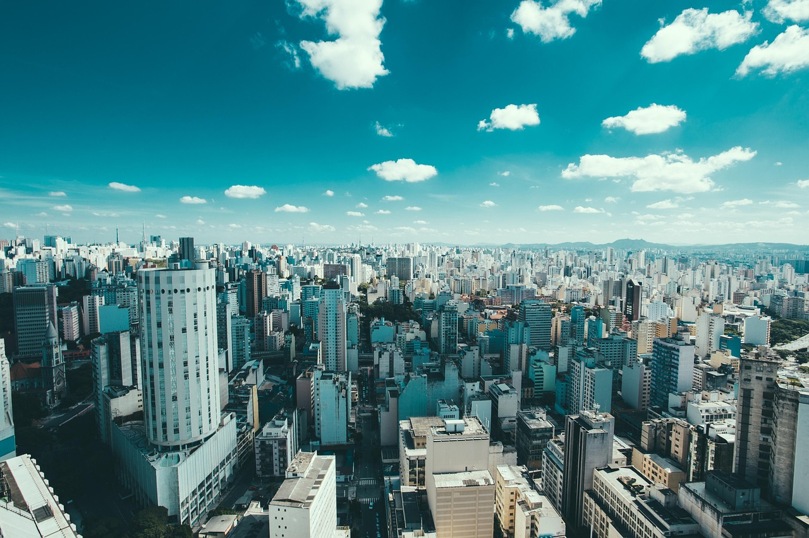
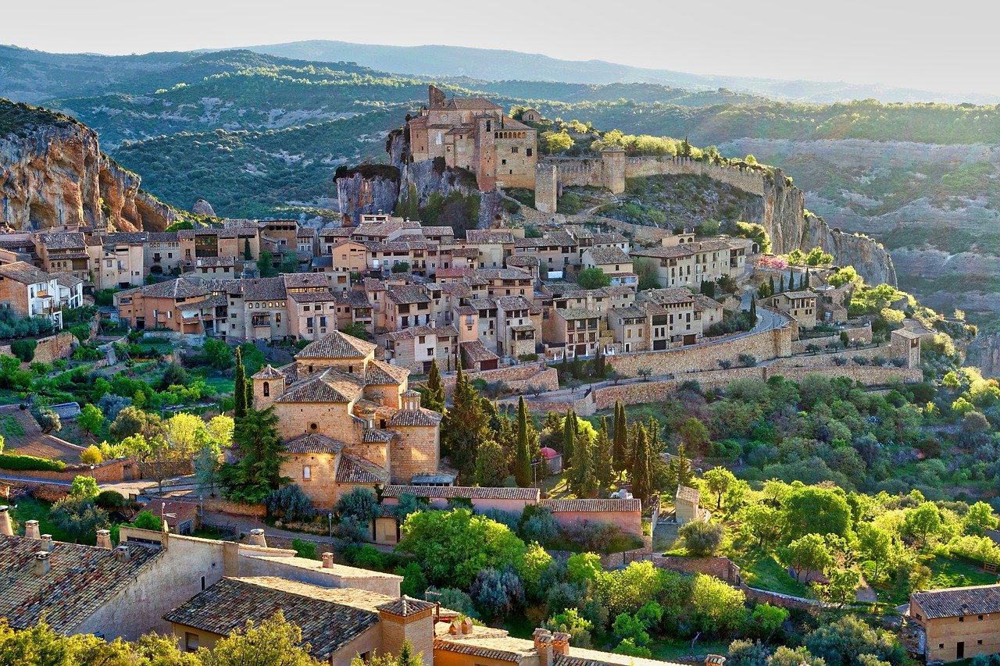

Nosso Blog

A Vida na Selva
Descubra como a reciclagem pode preservar ecossistemas e garantir um futuro mais verde para todos.
Atualizado há 2 dias

São Paulo: O Caos e a Solução
Como grandes cidades podem transformar desafios ambientais em oportunidades de inovação sustentável.
Atualizado há 52 minutos

Seria um Sonho?
Imagine um mundo onde a sustentabilidade faz parte do cotidiano. Saiba como podemos chegar lá juntos.
Atualizado há 3 minutos